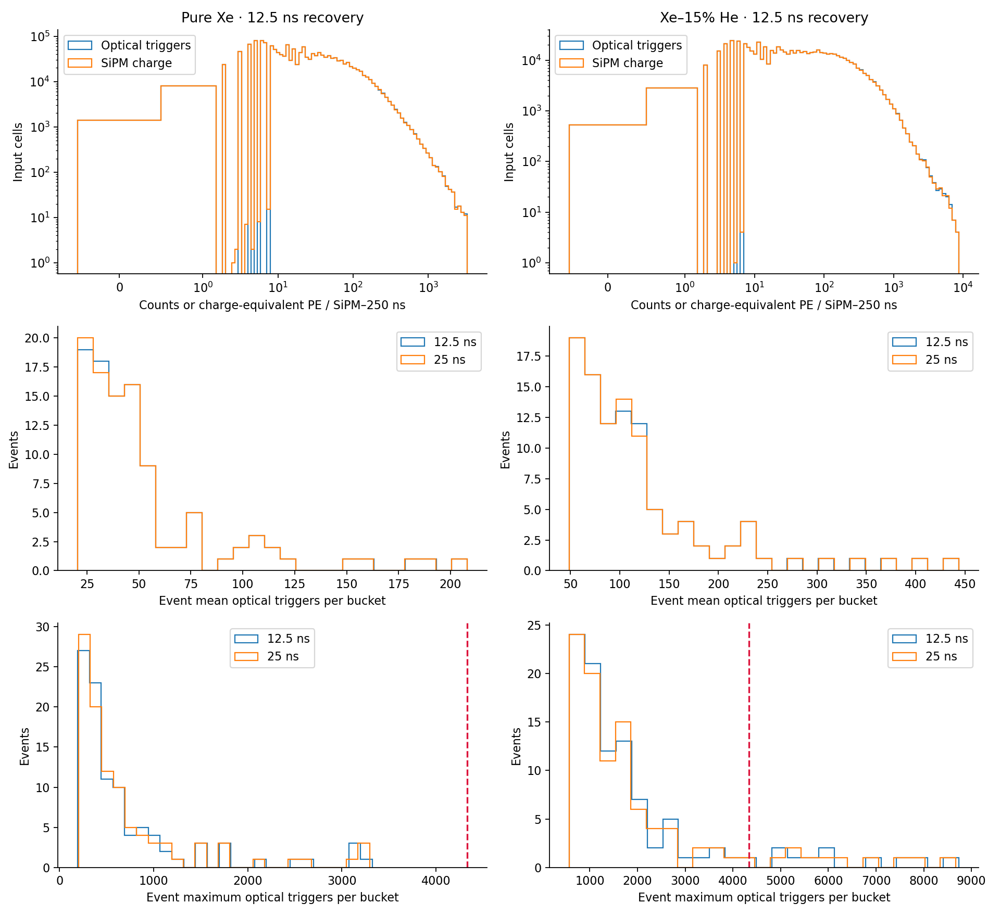
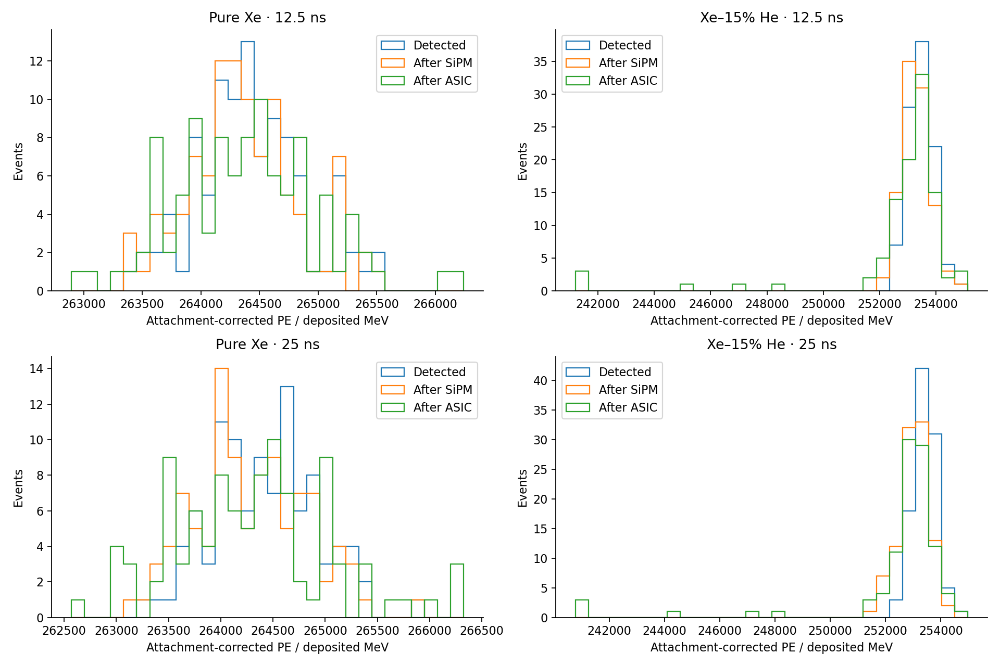
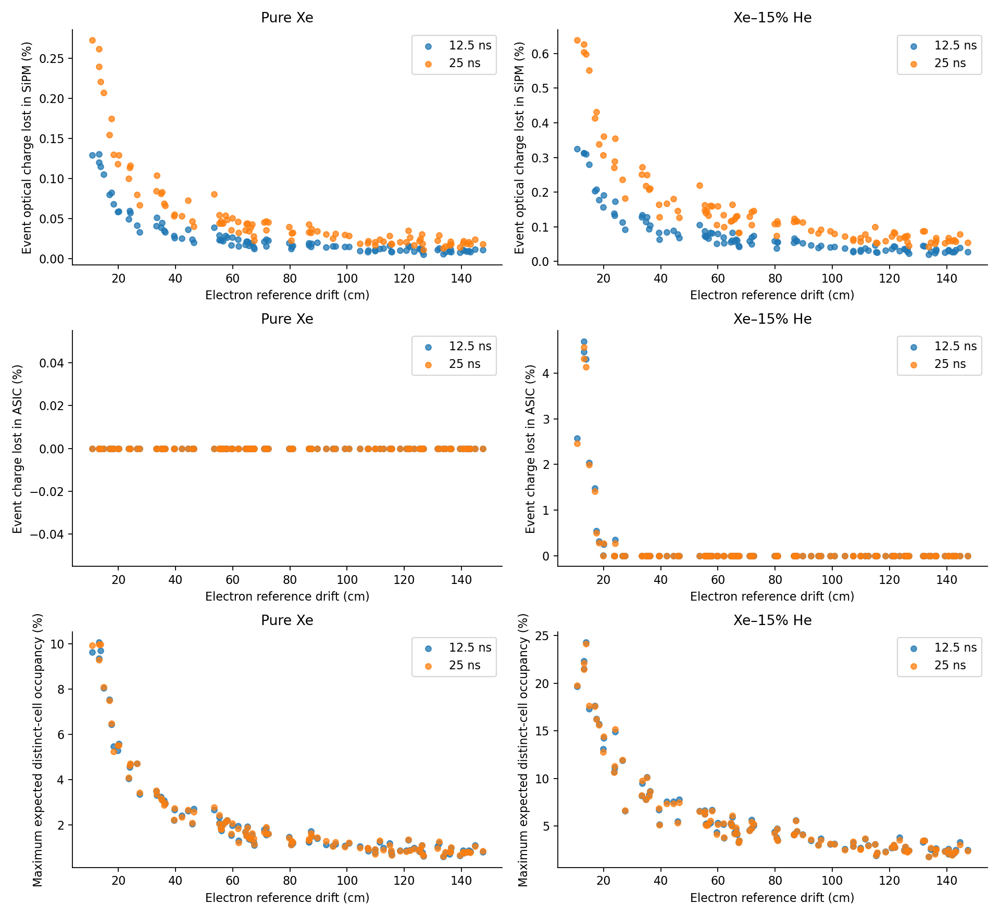
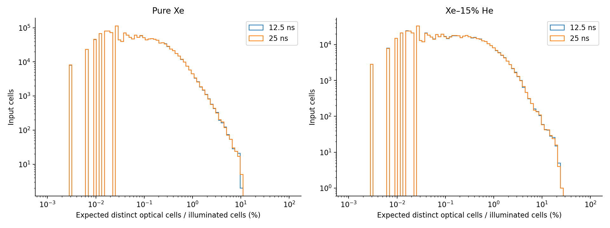

The same first 100 bb0nu tracks (source IDs 0–99) are replayed for both gases. Electron reference drift is sampled uniformly from 10 to 150 cm with a separate reproducible placement stream. Ion drift is its complement within 150 cm. This reference distance sets the common diffusion and attachment for the event hits; their source coordinates and primary-pair realization are retained. No ion histories are produced. Both recovery cases reuse the identical saved blue-photon histories; their SiPM stochastic draws are independent.
E/P = 2 kV/cm/bar at 15 bar; 3 mm diameter holes, 5 mm EL depth, 5 mm pitch and 250 ns buckets. Electron collection is unity. Uniform axial EL and absorbing walls give the analytical exit acceptance. TPB conversion 0.65, forward factor 0.5 and guide capture 1−1/1.5 apply once. The optical probability is 0.01386501. Guide propagation and NOA 87 coupling are ideal; the xenon gap is 0.5 mm radially. The saved optical signal is blue photons at the SiPM entrance.
S14160-3015PS: 3 × 3 mm², 39,984 cells at 15 micrometre pitch, PDE 0.32 (peak at 460 nm used as a spectrum-average approximation), gain 360,000, +4 V and 25 C. Uniform illumination of the centered 3 mm circular guide footprint uses 31,403 cells, round(39984 × π/4). The remaining 8,581 cells receive dark triggers only. The full-device 700 kcps dark rate is split by cell count; both populations have independent stationary recovery states. Provisional exponential recovery constants 12.5 and 25 ns are sensitivity parameters, not measured recharge constants for this device. Crosstalk, afterpulsing and gain spread remain deferred; PDE is independent of recovery.
| Gas | Recovery | Mean detected PE/event | SiPM loss (%) | ASIC loss (%) | Events clipped (%) | Pulses clipped (%) |
|---|---|---|---|---|---|---|
| Pure Xe | 12.5 ns | 616,706 | 0.0276 | 0.0000 | 0.0 | 0.00000 |
| Xe–15% He | 12.5 ns | 591,118 | 0.0790 | 0.2184 | 11.0 | 0.01705 |
| Pure Xe | 25 ns | 616,687 | 0.0552 | 0.0000 | 0.0 | 0.00000 |
| Xe–15% He | 25 ns | 591,025 | 0.1576 | 0.2098 | 10.0 | 0.01657 |
| Gas | Recovery | Detected RMS (%) | SiPM RMS (%) | Noisy unclipped RMS (%) | ASIC RMS (%) |
|---|---|---|---|---|---|
| Pure Xe | 12.5 ns | 0.1724 | 0.1763 | 0.2291 | 0.2291 |
| Xe–15% He | 12.5 ns | 0.1807 | 0.1951 | 0.2347 | 0.9396 |
| Pure Xe | 25 ns | 0.1911 | 0.2035 | 0.2853 | 0.2853 |
| Xe–15% He | 25 ns | 0.1683 | 0.2107 | 0.2564 | 0.9521 |
| Gas | Recovery | Event-mean avg PE | Event-max avg PE | Largest count | Largest charge PE | Max occupancy (%) |
|---|---|---|---|---|---|---|
| Pure Xe | 12.5 ns | 53.41 | 721.9 | 3,325 | 3,310.4 | 10.05 |
| Xe–15% He | 12.5 ns | 121.65 | 1,994.4 | 8,738 | 8,614.5 | 24.29 |
| Pure Xe | 25 ns | 53.40 | 725.4 | 3,295 | 3,263.2 | 9.96 |
| Xe–15% He | 25 ns | 121.64 | 1,986.4 | 8,672 | 8,445.6 | 24.13 |
The validated statistical model retains first and second moments of cell recovery, uses exact conditional finite-cell occupancy moments, and a bounded moment-matched charge draw. Dense buckets use 128 substeps; sparse triggers use individual uniform times. Optical trigger counts are sampled PDE successes, and recurrent firing is allowed. Charge-equivalent PE is collected charge divided by e × gain. Distinct optical occupancy is the conditional expected number M[1−(1−1/M)^N] of cells reached by N optical triggers during a bucket. It counts each cell once; it is saved as an expectation rather than as sampled cell identities. See src/ion_signal/sipm_statistical.jl and the implementation tests.
The ASIC adds 3.5417 PE RMS Gaussian noise to each acquired bucket and clips at 1 mA bucket-average current (4334.38 charge-equivalent PE). Signed values are retained. Pulse comparisons use all photon-positive input cells at every stage. Event totals sum the full acquisition interval on illuminated channels, including four quiet buckets at either end. SiPM loss is optical trigger count minus optical charge, divided by trigger count. ASIC loss is clipped charge divided by incoming sensor charge, including dark charge. Event widths are full-distribution RMS/mean after known attachment and deposited-energy correction. Optical and SiPM widths use optical quantities; ASIC widths subtract the expected full-area dark baseline before normalization. A correction for SiPM compression is not applied.
Photon replay/archive 5.29 s; response 12.5 ns 42.85 s; response 25 ns 40.64 s; combined 88.78 s. Stage timings include compilation and I/O; process startup and presentation are separate.
Twenty dedicated tests cover placement reproducibility, uniform range, full-area dark rate, count/charge conservation, recurrent firing and 128-to-256 substep convergence. Saved-event checks verify primary checksums, PDE statistics, charge ledgers, response diagnostics and quiet-cell noise. Rare state feasibility repairs adjust only the second recovery moment, preserving sampled charge and the first moment. Their maximum size is reported relative to the smaller cell population; checks require less than 10 ppm and fewer than one repair per million batches. No charge-variance limits occurred.




| Gas | Recovery | Event ID | Drift (cm) | Max count | Occupancy (%) | SiPM loss (%) | ASIC loss (%) |
|---|---|---|---|---|---|---|---|
| Pure Xe | 12.5 ns | 52 | 13.17 | 3,325 | 10.05 | 0.131 | 0.000 |
| Pure Xe | 12.5 ns | 2 | 10.78 | 3,176 | 9.62 | 0.129 | 0.000 |
| Pure Xe | 12.5 ns | 78 | 13.21 | 3,080 | 9.34 | 0.120 | 0.000 |
| Pure Xe | 12.5 ns | 67 | 13.75 | 3,199 | 9.69 | 0.115 | 0.000 |
| Pure Xe | 12.5 ns | 54 | 14.87 | 2,628 | 8.03 | 0.105 | 0.000 |
| Xe–15% He | 12.5 ns | 78 | 13.21 | 7,613 | 21.53 | 0.313 | 4.702 |
| Xe–15% He | 12.5 ns | 52 | 13.17 | 7,935 | 22.33 | 0.313 | 4.472 |
| Xe–15% He | 12.5 ns | 67 | 13.75 | 8,738 | 24.29 | 0.310 | 4.309 |
| Xe–15% He | 12.5 ns | 2 | 10.78 | 6,885 | 19.69 | 0.325 | 2.580 |
| Xe–15% He | 12.5 ns | 54 | 14.87 | 5,973 | 17.32 | 0.280 | 2.043 |
| Pure Xe | 25 ns | 2 | 10.78 | 3,279 | 9.92 | 0.273 | 0.000 |
| Pure Xe | 25 ns | 52 | 13.17 | 3,295 | 9.96 | 0.262 | 0.000 |
| Pure Xe | 25 ns | 78 | 13.21 | 3,060 | 9.28 | 0.240 | 0.000 |
| Pure Xe | 25 ns | 67 | 13.75 | 3,293 | 9.96 | 0.221 | 0.000 |
| Pure Xe | 25 ns | 54 | 14.87 | 2,651 | 8.10 | 0.207 | 0.000 |
| Xe–15% He | 25 ns | 78 | 13.21 | 7,600 | 21.50 | 0.605 | 4.579 |
| Xe–15% He | 25 ns | 52 | 13.17 | 7,860 | 22.14 | 0.627 | 4.321 |
| Xe–15% He | 25 ns | 67 | 13.75 | 8,672 | 24.13 | 0.598 | 4.140 |
| Xe–15% He | 25 ns | 2 | 10.78 | 6,914 | 19.76 | 0.639 | 2.463 |
| Xe–15% He | 25 ns | 54 | 14.87 | 6,094 | 17.64 | 0.551 | 1.993 |
| Gas | Recovery | Ledger checks | State repairs | Variance limits | PDE z | Quiet RMS PE | Max repair (ppm) |
|---|---|---|---|---|---|---|---|
| Pure Xe | 12.5 ns | 100 | 4 | 0 | 1.01 | 3.5427 | 5.527 |
| Xe–15% He | 12.5 ns | 100 | 3 | 0 | 0.54 | 3.5401 | 0.537 |
| Pure Xe | 25 ns | 100 | 1 | 0 | 0.72 | 3.5428 | 4.412 |
| Xe–15% He | 25 ns | 100 | 0 | 0 | -0.93 | 3.5413 | 0.000 |
PDF · File index. Complete workflow: make elm-sipm-pilot; presentation: make elm-sipm-report.
schema = "nausicaa.electron_detector_spec.v1" pressure_bar = 15.0 helium_fraction = 0.15 drift_speed_mm_us = 1.0 lifetime_ms = 15.0 hole_pitch_mm = 5.0 hole_diameter_mm = 3.0 hole_depth_mm = 5.0 sipm_shape = "square" sipm_side_mm = 3.0 bucket_width_us = 0.25 reduced_field_kV_cm_bar = 2.0 j_variance_ratio = 0.030 j_status = "user_specified" j_reference = "Oliveira Figure 6; corrected approximate user reading, 2026-11-04" optical_model = "elm_blue_meridional" electron_collection_efficiency = 1.0 [optics] photon_band = "blue_tpb" tpb_conversion_efficiency = 0.65 forward_fraction = 0.5 guide_refractive_index = 1.5 gap_refractive_index = 1.0 guide_length_mm = 100.0 gas_gap_radial_mm = 0.5 propagation_transmission = 1.0 coupling_transmission = 1.0 electrode_transmission = 1.0 coupling_adhesive = "Norland NOA 87" guide_length_policy = "fixed_grading_field" grading_field_kV_cm = 4.65 cathode_potential_V = 1200.0 entry_potential_V = 31500.0 exit_potential_V = 46500.0 sensor_plane_potential_V = 0.0 reference = "docs/elm.tex; isotropic axial EL, absorbing walls, meridional isotropic-in-core capture" [pure_xe] d_T_mm_sqrtbar_per_sqrtcm = 3.5 d_L_mm_sqrtbar_per_sqrtcm = 0.9 yield_gain_photons_per_electron_kV = 137.0 yield_threshold_kV_cm_bar = 0.73 [xe_he15] d_T_mm_sqrtbar_per_sqrtcm = 1.6 d_L_mm_sqrtbar_per_sqrtcm = 0.75 yield_gain_photons_per_electron_kV = 139.0 yield_threshold_kV_cm_bar = 0.80 [placement] mode = "uniform_electron_reference" minimum_electron_drift_cm = 10.0 maximum_electron_drift_cm = 150.0 seed = 2026 reference = "Event reference drift; common diffusion and attachment distance for all hits, original hit coordinates retained" schema = "nausicaa.sipm_spec.v1" response_model = "statistical" statistical_substeps = 128 sparse_trigger_limit = 16 microcell_count = 39984 illuminated_microcell_count = 31403 microcell_pitch_m = 15e-6 recovery_s = 1.25e-08 arrival_model = "uniform_in_bucket" illumination = "uniform_disk_subset" recovery_pde = "constant" initial_state = "stationary_dark" charge_assignment = "avalanche_bucket" input_photon_band = "blue_tpb" shape = "square" side_m = 0.003 pde = 0.32 gain = 360000.0 dark_reference_rate_Hz = 700000.0 dark_reference_area_m2 = 9e-6 crosstalk = false afterpulsing = false gain_spread = false seed = 2026 [acquisition] channels = "illuminated_in_event" additional_channels = [] quiet_before_buckets = 4 quiet_after_buckets = 4 empty_first_bucket = 0 empty_last_bucket = 7 [provenance] device = "Hamamatsu S14160-3015PS, 3x3 mm2; nominal +4 V, 25 C" pde = "0.32 peak PDE at 460 nm used as provisional TPB-spectrum average; packaged PDE includes entrance window" gain = "3.6e5 nominal electrons per primary avalanche; charge per fully recovered avalanche" dark_rate = "S14160-3015PS nominal primary dark rate 700 kcps at 25 C and +4 V" window = "S14160-3015PS silicone resin, nominal n=1.57; unit external coupling used in pilot" datasheet = "papers/SiPM/Hamamatsu_S14160_small_cells.pdf" recovery = "Provisional 12p5 ns exponential recovery; sensitivity parameter, not a measured 3015PS recharge constant" illumination = "Uniform centered 3 mm disk on 3x3 mm square: round(39984*pi/4)=31403 lit cells; remaining 8581 dark-only; full 700 kcps dark rate split by cell count" schema = "nausicaa.sipm_spec.v1" response_model = "statistical" statistical_substeps = 128 sparse_trigger_limit = 16 microcell_count = 39984 illuminated_microcell_count = 31403 microcell_pitch_m = 15e-6 recovery_s = 2.5e-08 arrival_model = "uniform_in_bucket" illumination = "uniform_disk_subset" recovery_pde = "constant" initial_state = "stationary_dark" charge_assignment = "avalanche_bucket" input_photon_band = "blue_tpb" shape = "square" side_m = 0.003 pde = 0.32 gain = 360000.0 dark_reference_rate_Hz = 700000.0 dark_reference_area_m2 = 9e-6 crosstalk = false afterpulsing = false gain_spread = false seed = 2026 [acquisition] channels = "illuminated_in_event" additional_channels = [] quiet_before_buckets = 4 quiet_after_buckets = 4 empty_first_bucket = 0 empty_last_bucket = 7 [provenance] device = "Hamamatsu S14160-3015PS, 3x3 mm2; nominal +4 V, 25 C" pde = "0.32 peak PDE at 460 nm used as provisional TPB-spectrum average; packaged PDE includes entrance window" gain = "3.6e5 nominal electrons per primary avalanche; charge per fully recovered avalanche" dark_rate = "S14160-3015PS nominal primary dark rate 700 kcps at 25 C and +4 V" window = "S14160-3015PS silicone resin, nominal n=1.57; unit external coupling used in pilot" datasheet = "papers/SiPM/Hamamatsu_S14160_small_cells.pdf" recovery = "Provisional 25 ns exponential recovery; sensitivity parameter, not a measured 3015PS recharge constant" illumination = "Uniform centered 3 mm disk on 3x3 mm square: round(39984*pi/4)=31403 lit cells; remaining 8581 dark-only; full 700 kcps dark rate split by cell count" baseline_pe = 0.0 bucket_width_s = 2.5e-7 current_limit_A = 0.001 lower_clipping = false noise = "independent_gaussian_pe" noise_rms_pe = 3.5416666666666665 schema = "nausicaa.sipm_electronics_spec.v1" seed = 2027 transfer = "bucket_average_current" [provenance] noise = "Same input charge RMS as 0.5 PE at gain 2.55e6; rescaled to gain 3.6e5" range = "User design input: upper clipping at 1 mA; supersedes the provisional 300 PE limit" timing = "User 0.25 us buckets; integrated charge divided by bucket duration"